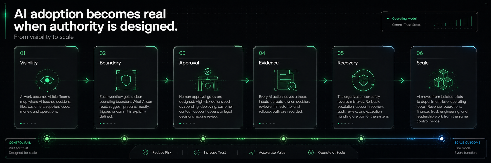

DEPARTMENT AI ADOPTION MAP · DAILY SIGNAL SYNTHESIS
AI adoption becomes real when authority is designed.
This page turns the Daily Signal and Signal vs. Noise writing themes into a practical operating map: where AI enters work, which department owns the workflow, what level of autonomy is safe, and which controls make the work reviewable.

[ /01 OPERATING MAP ]
One agent control plane across six department layers.
The writing pattern is consistent: AI is leaving the chat box and entering revenue, operations, trust, engineering, finance and leadership workflows. The adoption layer has to connect those departments without hiding ownership.
[ /02 WRITING SYNTHESIS ]
The posts point to five adoption shifts.
The map is not a generic department list. It comes from a repeated pattern in the daily and weekly writing: AI adoption starts as output, then becomes workflow movement, then becomes authority, evidence and recovery.
Signal pattern from the writing archive
- Revenue AI moves from content generation into customer signal routing, CRM updates, proposals and support handoffs.
- Operations and procurement agents move closer to approvals, supplier workflows, ERP-connected sourcing and exception handling.
- Trust and security become adoption layers because agents touch accounts, memory, documents, payment paths and permissions.
- Product and engineering teams move from model access toward AI inside terminals, repositories, tests, evals and release workflows.
- Leadership needs visibility into where AI enters work, what it can do, who approves it and how the company recovers when it is wrong.
Autonomy ladder
Every department should classify AI use by the level of authority granted, not by the tool name.
SuggestSummarize, draft, classify, analyze.low
PrepareCreate a next action for human review.medium
ModifyChange a file, record, ticket or CRM field.high
TriggerStart a workflow, escalate, notify, route.high
CommitSpend, approve, deploy or contact externally.critical
[ /03 DEPARTMENT ADAPTATION MAP ]
Department-by-department recommendations.
Each layer has a different first pilot, a different control question and a different proof of value. The common thread is controlled workflow movement.
Make agent work visible before scaling it.
Leadership should treat AI as an operating-model question, not a collection of disconnected pilots.
- Maintain an AI initiative cockpit with owner, risk, autonomy level and review cadence.
- Require decision logs for workflows where AI prepares or influences strategic choices.
- Define which exceptions reach executives and which remain at department level.
Move from content volume to signal routing.
Marketing, sales and CX gain leverage when AI connects customer signals to next actions.
- Pilot account context preparation, CRM hygiene and support-to-sales handoff summaries.
- Route proposals through brand, legal and finance review before external use.
- Measure quality by pipeline movement and renewal risk visibility, not output count.
Use AI where exceptions are visible.
Operations should start with workflow preparation, triage and escalation rather than hidden automation.
- Map queues, bottlenecks, SLAs and handoffs before selecting tools.
- Let agents prepare decisions, compare options and detect exceptions before humans approve.
- Track every escalation with owner, reason, time saved and failure mode.
Protect spend authority with explicit gates.
Money workflows are high leverage because they are repetitive, evidence-heavy and risk-sensitive.
- Start with invoice preparation, vendor comparison, tail-spend analysis or forecast briefs.
- Separate recommendation, approval and commitment rights.
- Log source evidence, model cost, approval path and recovery owner.
Treat agents as identities, not just tools.
Trust becomes operational when AI accounts can access memory, documents, files and delegated actions.
- Define onboarding, role-change and offboarding rules for AI accounts and agents.
- Document what AI may suggest, prepare, send, buy or trigger.
- Create audit and recovery procedures before expanding access.
Turn velocity into disciplined operating loops.
Developer and product AI needs scope, tests, evals, code review and rollback, not just faster generation.
- Classify AI workflows by file access, command access, repo scope and deployment authority.
- Make evals and review gates part of the release workflow.
- Preserve artifacts: prompt context, diff, test result, reviewer and rollback path.
[ /04 CONTROL SCORECARD ]
Five controls determine whether adoption can scale.
The weekly synthesis repeatedly returns to the same control stack: visible work, explicit boundaries, human approvals, evidence trails and recovery loops.
/01 · Visibility
Where does AI live?
Which workflows contain AI, which agents exist, and where do they operate?
/02 · Boundary
What can it touch?
What can AI read, write, trigger, change or never touch?
/03 · Approval
Who signs off?
When is a human checkpoint required before movement or commitment?
/04 · Evidence
What is preserved?
Where are inputs, outputs, decisions, logs and review notes preserved?
/05 · Recovery
How do we undo?
How can access be revoked, actions reversed and workflows improved after failure?
[ /05 ADOPTION MATRIX ]
Where to start, what to control, how to prove value.
This matrix turns the department map into a practical conversation guide for pilots, hiring interviews and advisory discussions.
| Layer | Best first pilot | Safe autonomy level | Primary control | Proof of value |
|---|---|---|---|---|
| Leadership | AI initiative cockpit and risk review brief. | SuggestPrepare | Named owner and decision log. | Faster review cadence, fewer invisible pilots. |
| Revenue / CX | Account context, CRM updates, support-to-sales handoff. | PrepareModify | External message and data-use approval. | Better follow-up quality, cleaner CRM, visible renewal risks. |
| Operations | Queue triage, exception detection, SLA summaries. | PrepareTrigger | Escalation path and exception owner. | Shorter cycle time, fewer stuck handoffs. |
| Finance / Procurement | Invoice preparation, vendor comparison, tail spend review. | SuggestPrepare | Approval before commitment or spend. | Audit-ready evidence, reduced manual chase work. |
| Trust / Legal / Security | AI account inventory, permission map, policy review workflow. | SuggestPrepare | Identity, permission, recovery procedure. | Known agent inventory, lower shadow-agent risk. |
| Product / Eng / Data | Controlled coding workflow with tests, evals and review gates. | PrepareModifyTrigger | Scope, sandbox, test, review, rollback. | Higher delivery velocity without hidden authority. |
[ /06 90-DAY ROLLOUT ]
A practical rollout sequence for accountable adoption.
The goal is not to automate everything quickly. The goal is to learn where AI can move work safely while making the controls reusable across departments.
/ 0-30 DAYS
Map and classify
Create an inventory of AI use, workflows, data access, department owners and autonomy levels. Pick one pilot where review is easy and failure is recoverable.
- Agent / tool inventory
- Workflow map
- Autonomy classification
/ 31-60 DAYS
Pilot with gates
Run one department pilot with explicit boundaries: what AI can read, prepare, modify or trigger, and which actions require approval.
- Approval checkpoints
- Evidence logging
- Escalation rules
/ 61-90 DAYS
Standardize and scale
Convert the pilot into reusable adoption patterns: control templates, scorecards, review cadence, training notes and rollback procedures.
- Reusable playbooks
- Cross-department dashboard
- Learning loop and recovery drills
[ /07 INTERVIEW-READY FRAMING ]
The core adoption argument in one sentence.
AI adoption is no longer mainly a model-selection problem. It is an operating-design problem: what AI can do, under whose authority, with what evidence, and how the organization recovers when it is wrong.
For hiring conversations
Use this map to explain how you think across business, operations, technology and governance without sounding theoretical.
- Shows department empathy
- Connects AI to work movement
- Frames risk as design work
For advisory conversations
Use the control plane to help teams choose pilots that create evidence without creating unmanaged authority.
- Starts with workflow mapping
- Defines approval gates early
- Creates reusable adoption patterns
For content continuity
Each future Daily Signal can attach to the map: one signal, one department, one workflow change, one operator takeaway.
- Daily writing feeds the map
- Weekly synthesis updates the thesis
- Portfolio page becomes a living operating model